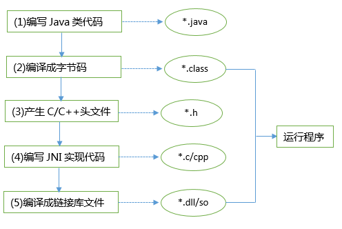
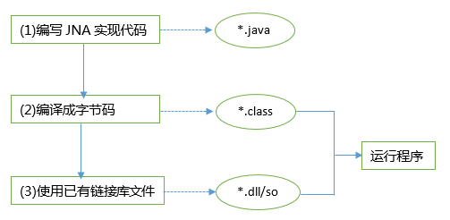
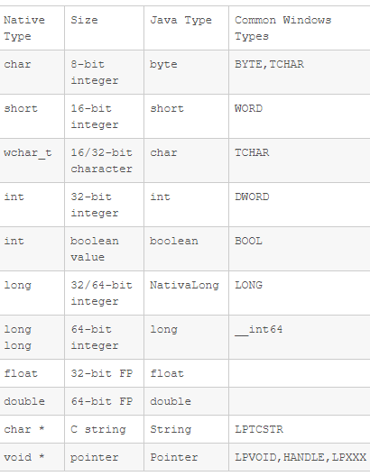

<!DOCTYPE html>


  <html class="light page-post">


<head><meta name="generator" content="Hexo 3.8.0">
  <meta charset="utf-8">
  
  <title>java-jna笔记 | 胡思旺</title>

  <meta name="viewport" content="width=device-width, initial-scale=1, maximum-scale=1">

  
    <meta name="keywords" content="全栈,微服务,Java,Netty,Vue,机器学习,Python">
  

  <meta name="description" content="Java JNA笔记  JNA（Java Native Access）开源的Java框架，是一个调用本地动态库中方法的技术，建立在经典的JNI（Java Native Interface）基础上的一个框架    JNA技术比使用JNI技术调用动态链接库会有些性能损失,但总体影响不大      JNI    代码编写步骤    创建本地Java的调用代码  12345678public class">
<meta property="og:type" content="article">
<meta property="og:title" content="java-jna笔记">
<meta property="og:url" content="http://yoursite.com/2018/12/21/java-jna笔记/index.html">
<meta property="og:site_name" content="胡思旺">
<meta property="og:description" content="Java JNA笔记  JNA（Java Native Access）开源的Java框架，是一个调用本地动态库中方法的技术，建立在经典的JNI（Java Native Interface）基础上的一个框架    JNA技术比使用JNI技术调用动态链接库会有些性能损失,但总体影响不大      JNI    代码编写步骤    创建本地Java的调用代码  12345678public class">
<meta property="og:locale" content="default">
<meta property="og:image" content="http://yoursite.com/2018/12/21/java-jna笔记/jna1.png">
<meta property="og:image" content="http://yoursite.com/2018/12/21/java-jna笔记/jna2.png">
<meta property="og:image" content="http://yoursite.com/2018/12/21/java-jna笔记/jna3.PNG">
<meta property="og:updated_time" content="2018-12-21T03:31:02.045Z">
<meta name="twitter:card" content="summary">
<meta name="twitter:title" content="java-jna笔记">
<meta name="twitter:description" content="Java JNA笔记  JNA（Java Native Access）开源的Java框架，是一个调用本地动态库中方法的技术，建立在经典的JNI（Java Native Interface）基础上的一个框架    JNA技术比使用JNI技术调用动态链接库会有些性能损失,但总体影响不大      JNI    代码编写步骤    创建本地Java的调用代码  12345678public class">
<meta name="twitter:image" content="http://yoursite.com/2018/12/21/java-jna笔记/jna1.png">

  

  
    <link rel="icon" href="/favicon.ico">
  

  <link href="/css/styles.css?v=c114cben" rel="stylesheet">


  
    <link rel="stylesheet" href="/css/personal-style.css">
  

  

  
  <script type="text/javascript">
    var _hmt = _hmt || [];
    (function() {
      var hm = document.createElement("script");
      hm.src = "//hm.baidu.com/hm.js?57e94d016e201fba3603a8a2b0263af0";
      var s = document.getElementsByTagName("script")[0];
      s.parentNode.insertBefore(hm, s);
    })();
  </script>


  
  <script type="text/javascript">
	(function(){
	    var bp = document.createElement('script');
	    var curProtocol = window.location.protocol.split(':')[0];
	    if (curProtocol === 'https') {
	        bp.src = 'https://zz.bdstatic.com/linksubmit/push.js';        
	    }
	    else {
	        bp.src = 'http://push.zhanzhang.baidu.com/push.js';
	    }
	    var s = document.getElementsByTagName("script")[0];
	    s.parentNode.insertBefore(bp, s);
	})();
  </script>


  

</head>
</html>
<body>


  
    <span id="toolbox-mobile" class="toolbox-mobile">盒子</span>
  

  <div class="post-header CENTER">
   
  <div class="toolbox">
    <a class="toolbox-entry" href="/">
      <span class="toolbox-entry-text">盒子</span>
      <i class="icon-angle-down"></i>
      <i class="icon-home"></i>
    </a>
    <ul class="list-toolbox">
      
        <li class="item-toolbox">
          <a class="CIRCLE" href="/archives/" rel="noopener noreferrer" target="_self">
            博客
          </a>
        </li>
      
        <li class="item-toolbox">
          <a class="CIRCLE" href="/project/" rel="noopener noreferrer" target="_self">
            项目
          </a>
        </li>
      
        <li class="item-toolbox">
          <a class="CIRCLE" href="/category/" rel="noopener noreferrer" target="_self">
            分类
          </a>
        </li>
      
        <li class="item-toolbox">
          <a class="CIRCLE" href="/search/" rel="noopener noreferrer" target="_self">
            搜索
          </a>
        </li>
      
        <li class="item-toolbox">
          <a class="CIRCLE" href="/about/" rel="noopener noreferrer" target="_self">
            联系
          </a>
        </li>
      
    </ul>
  </div>


</div>


  <div id="toc" class="toc-article">
    <strong class="toc-title">文章目录</strong>
    <ol class="toc"><li class="toc-item toc-level-1"><a class="toc-link" href="#Java-JNA笔记"><span class="toc-text">Java JNA笔记</span></a><ol class="toc-child"><li class="toc-item toc-level-2"><a class="toc-link" href="#JNI"><span class="toc-text">JNI</span></a></li><li class="toc-item toc-level-2"><a class="toc-link" href="#JNA"><span class="toc-text">JNA</span></a><ol class="toc-child"><li class="toc-item toc-level-3"><a class="toc-link" href="#JNA和C数据类型转换定义"><span class="toc-text">JNA和C数据类型转换定义</span></a></li><li class="toc-item toc-level-3"><a class="toc-link" href="#JNA使用"><span class="toc-text">JNA使用</span></a></li></ol></li></ol></li></ol>
  </div>


<div class="content content-post CENTER">
   <article id="post-java-jna笔记" class="article article-type-post" itemprop="blogPost">
  <header class="article-header">
    <h1 class="post-title">java-jna笔记</h1>

    <div class="article-meta">
      <span>
        <i class="icon-calendar"></i>
        <span>2018.12.21</span>
      </span>

      
        <span class="article-author">
          <i class="icon-user"></i>
          <span>siwang.hu</span>
        </span>
      

      
  <span class="article-category">
    <i class="icon-list"></i>
    <a class="article-category-link" href="/categories/java基础/">java基础</a>
  </span>


      
        <span>
          <i class="icon-comment"></i>
          <a href="http://www.github.com/siwanghu/2018/12/21/java-jna笔记/#disqus_thread"></a>
        </span>
      

      
      
    </div>
  </header>

  <div class="article-content">
    
      <h1 id="Java-JNA笔记"><a href="#Java-JNA笔记" class="headerlink" title="Java JNA笔记"></a>Java JNA笔记</h1><blockquote>
<ul>
<li><p>JNA（Java Native Access）开源的Java框架，是一个调用本地动态库中方法的技术，建立在经典的JNI（Java Native Interface）基础上的一个框架  </p>
</li>
<li><p>JNA技术比使用JNI技术调用动态链接库会有些性能损失,但总体影响不大  </p>
</li>
</ul>
</blockquote>
<h2 id="JNI"><a href="#JNI" class="headerlink" title="JNI"></a>JNI</h2><blockquote>
<p>  </p>
<p><strong>代码编写步骤</strong>  </p>
<ul>
<li>创建本地Java的调用代码  <figure class="highlight plain"><table><tr><td class="gutter"><pre><span class="line">1</span><br><span class="line">2</span><br><span class="line">3</span><br><span class="line">4</span><br><span class="line">5</span><br><span class="line">6</span><br><span class="line">7</span><br><span class="line">8</span><br></pre></td><td class="code"><pre><span class="line">public class TestJNI &#123;</span><br><span class="line">    //声明Native方法</span><br><span class="line">    public native int add(int a, int b); </span><br><span class="line"></span><br><span class="line">     public static void main(String[] args) &#123;</span><br><span class="line">         //待完善部分</span><br><span class="line">     &#125;</span><br><span class="line">&#125;</span><br></pre></td></tr></table></figure>
</li>
</ul>
</blockquote>
<blockquote>
<ul>
<li><p>用javac编译生成字节码，<strong>javac TestJNI.java</strong>  </p>
</li>
<li><p>用javah生成中介（代理）动态库的头文件，<strong>javah TestJNI</strong>，运行后，生成TestJNI.h文件  </p>
<figure class="highlight plain"><table><tr><td class="gutter"><pre><span class="line">1</span><br><span class="line">2</span><br><span class="line">3</span><br><span class="line">4</span><br><span class="line">5</span><br><span class="line">6</span><br><span class="line">7</span><br><span class="line">8</span><br><span class="line">9</span><br><span class="line">10</span><br><span class="line">11</span><br><span class="line">12</span><br><span class="line">13</span><br><span class="line">14</span><br><span class="line">15</span><br><span class="line">16</span><br><span class="line">17</span><br><span class="line">18</span><br><span class="line">19</span><br><span class="line">20</span><br><span class="line">21</span><br></pre></td><td class="code"><pre><span class="line">/* DO NOT EDIT THIS FILE - it is machine generated */</span><br><span class="line">#include &lt;jni.h&gt;</span><br><span class="line">/* Header for class TestJNI */</span><br><span class="line"></span><br><span class="line">#ifndef _Included_TestJNI</span><br><span class="line">#define _Included_TestJNI</span><br><span class="line">#ifdef __cplusplus</span><br><span class="line">extern &quot;C&quot; &#123;</span><br><span class="line">#endif</span><br><span class="line">/*</span><br><span class="line"> * Class:     TestJNI</span><br><span class="line"> * Method:    add</span><br><span class="line"> * Signature: (II)I</span><br><span class="line"> */</span><br><span class="line">JNIEXPORT jint JNICALL Java_TestJNI_add</span><br><span class="line">  (JNIEnv *, jobject, jint, jint);</span><br><span class="line"></span><br><span class="line">#ifdef __cplusplus</span><br><span class="line">&#125;</span><br><span class="line">#endif</span><br><span class="line">#endif</span><br></pre></td></tr></table></figure>
</li>
</ul>
</blockquote>
<blockquote>
<ul>
<li>生成中介（或代理）动态库，使用上一步生成的TestJNI.h，编写本地代理代码  <figure class="highlight plain"><table><tr><td class="gutter"><pre><span class="line">1</span><br><span class="line">2</span><br><span class="line">3</span><br><span class="line">4</span><br><span class="line">5</span><br><span class="line">6</span><br><span class="line">7</span><br><span class="line">8</span><br><span class="line">9</span><br><span class="line">10</span><br><span class="line">11</span><br><span class="line">12</span><br><span class="line">13</span><br><span class="line">14</span><br><span class="line">15</span><br><span class="line">16</span><br><span class="line">17</span><br><span class="line">18</span><br><span class="line">19</span><br><span class="line">20</span><br><span class="line">21</span><br><span class="line">22</span><br><span class="line">23</span><br><span class="line">24</span><br><span class="line">25</span><br><span class="line">26</span><br><span class="line">27</span><br><span class="line">28</span><br><span class="line">29</span><br><span class="line">30</span><br><span class="line">31</span><br><span class="line">32</span><br><span class="line">33</span><br><span class="line">34</span><br><span class="line">35</span><br><span class="line">36</span><br><span class="line">37</span><br><span class="line">38</span><br><span class="line">39</span><br><span class="line">40</span><br><span class="line">41</span><br></pre></td><td class="code"><pre><span class="line">// dllmain.cpp : Defines the entry point for the DLL application.</span><br><span class="line">#include &quot;stdafx.h&quot;</span><br><span class="line"></span><br><span class="line">#include &quot;jni.h&quot;    //在这里，我们要注意的是，需要引用</span><br><span class="line">#include &quot;TestJNI.h&quot; </span><br><span class="line"></span><br><span class="line">#ifdef WIN32</span><br><span class="line">       #ifdef _X86_</span><br><span class="line">              #define _T(x) x</span><br><span class="line">       #else</span><br><span class="line">              #ifdef _AMD64_</span><br><span class="line">              #define _T(x) L ## x</span><br><span class="line">              #endif</span><br><span class="line">       #endif</span><br><span class="line">#endif</span><br><span class="line"></span><br><span class="line">BOOL APIENTRY DllMain( HMODULE hModule,</span><br><span class="line">                       DWORD  ul_reason_for_call,</span><br><span class="line">                       LPVOID lpReserved</span><br><span class="line">                                    )</span><br><span class="line">&#123;</span><br><span class="line">       switch (ul_reason_for_call)</span><br><span class="line">       &#123;</span><br><span class="line">       case DLL_PROCESS_ATTACH:</span><br><span class="line">       case DLL_THREAD_ATTACH:</span><br><span class="line">       case DLL_THREAD_DETACH:</span><br><span class="line">       case DLL_PROCESS_DETACH:</span><br><span class="line">              break;</span><br><span class="line">       &#125;</span><br><span class="line">       return TRUE;</span><br><span class="line">&#125;</span><br><span class="line"></span><br><span class="line">JNIEXPORT jint JNICALL Java_TestJNI_add</span><br><span class="line">(JNIEnv * env, jobject o, jint x, jint y)</span><br><span class="line">&#123;</span><br><span class="line">       typedef int(*ADD)(int, int);//函数指针类型</span><br><span class="line">       HINSTANCE Hint = ::LoadLibrary(_T(&quot;Lib.dll&quot;));//加载我们真正需要的dll</span><br><span class="line">       ADD add = (ADD)GetProcAddress(Hint, &quot;add&quot;);//取得dll导出的add方法</span><br><span class="line">       return add(x, y);</span><br><span class="line">       FreeLibrary(Hint);</span><br><span class="line">&#125;</span><br></pre></td></tr></table></figure>
</li>
</ul>
</blockquote>
<blockquote>
<p><strong>编译完成上述代理代码，生成我们需要的中介（或代理）动态库Lib2Invoke.dll</strong>  </p>
<ul>
<li>Java调用Lib2Invoke.dll  <figure class="highlight plain"><table><tr><td class="gutter"><pre><span class="line">1</span><br><span class="line">2</span><br><span class="line">3</span><br><span class="line">4</span><br><span class="line">5</span><br><span class="line">6</span><br><span class="line">7</span><br><span class="line">8</span><br><span class="line">9</span><br><span class="line">10</span><br></pre></td><td class="code"><pre><span class="line">public class TestJNI &#123;</span><br><span class="line"></span><br><span class="line">   public native int add(int a, int b);</span><br><span class="line"></span><br><span class="line">   public static void main(String[] args) &#123;</span><br><span class="line">      System.loadLibrary(&quot;Lib2Invoke&quot;);</span><br><span class="line">      TestJNI p = new TestJNI();</span><br><span class="line">      System.out.println(p.add(100, 100));</span><br><span class="line">   &#125;</span><br><span class="line">&#125;</span><br></pre></td></tr></table></figure>
</li>
</ul>
</blockquote>
<blockquote>
<p><strong>可见步骤非常繁琐。如果已有一个编译好的dll/.so文件，使用JNI技术调用，我们首先需要使用C语言另外写一个dll/so共享库，使用Java规定的数据结构替代C语言的数据结构，调用已有的 dll/so中公布的函数，然后再在Java中载入这个库dll/so</strong>  </p>
</blockquote>
<h2 id="JNA"><a href="#JNA" class="headerlink" title="JNA"></a>JNA</h2><blockquote>
<ul>
<li><p>使用JNA技术时，开发人员只要在一个java接口中描述目标native library的函数与结构，JNA将自动实现Java接口到native function的映射，大大降低了Java调用本体共享库的开发难度  </p>
</li>
<li><p>JNA使用一个小型的JNI库插桩程序来动态调用本地代码。开发者使用Java接口描述目标本地库的功能和结构，这使得它很容易利用本机平台的功能，而不会产生多平台配置和生成JNI代码的高开销  </p>
</li>
</ul>
<p>  </p>
</blockquote>
<h3 id="JNA和C数据类型转换定义"><a href="#JNA和C数据类型转换定义" class="headerlink" title="JNA和C数据类型转换定义"></a>JNA和C数据类型转换定义</h3><blockquote>
<p>  </p>
</blockquote>
<h3 id="JNA使用"><a href="#JNA使用" class="headerlink" title="JNA使用"></a>JNA使用</h3><blockquote>
<ul>
<li>如果我们使用maven开发项目，可以添加jna依赖  <figure class="highlight plain"><table><tr><td class="gutter"><pre><span class="line">1</span><br><span class="line">2</span><br><span class="line">3</span><br><span class="line">4</span><br><span class="line">5</span><br><span class="line">6</span><br></pre></td><td class="code"><pre><span class="line">&lt;!-- https://mvnrepository.com/artifact/com.sun.jna/jna --&gt;</span><br><span class="line">&lt;dependency&gt;</span><br><span class="line">    &lt;groupId&gt;com.sun.jna&lt;/groupId&gt;</span><br><span class="line">    &lt;artifactId&gt;jna&lt;/artifactId&gt;</span><br><span class="line">    &lt;version&gt;3.0.9&lt;/version&gt;</span><br><span class="line">&lt;/dependency&gt;</span><br></pre></td></tr></table></figure>
</li>
</ul>
</blockquote>
<blockquote>
<ul>
<li>编写jna调用代码的接口  <figure class="highlight plain"><table><tr><td class="gutter"><pre><span class="line">1</span><br><span class="line">2</span><br><span class="line">3</span><br><span class="line">4</span><br><span class="line">5</span><br><span class="line">6</span><br><span class="line">7</span><br></pre></td><td class="code"><pre><span class="line">//建立一个接口继承Library，默认继承是Library</span><br><span class="line">//如果c中是stdcall方式导出的，就继承StdCallLibrary</span><br><span class="line">public interface TestJNA extends Library &#123;</span><br><span class="line">    //声明方法，方法的返回值和参数要和本地dll对应</span><br><span class="line">    //对应类型可以查看jna定义的类型转换</span><br><span class="line">    int add(int a, int b);</span><br><span class="line">&#125;</span><br></pre></td></tr></table></figure>
</li>
</ul>
</blockquote>
<blockquote>
<ul>
<li>使用已有的动态链接库  <figure class="highlight plain"><table><tr><td class="gutter"><pre><span class="line">1</span><br><span class="line">2</span><br><span class="line">3</span><br><span class="line">4</span><br><span class="line">5</span><br><span class="line">6</span><br><span class="line">7</span><br><span class="line">8</span><br><span class="line">9</span><br><span class="line">10</span><br><span class="line">11</span><br><span class="line">12</span><br><span class="line">13</span><br><span class="line">14</span><br></pre></td><td class="code"><pre><span class="line">public class Jna</span><br><span class="line">&#123;</span><br><span class="line">    public static void main( String[] args )</span><br><span class="line">    &#123;</span><br><span class="line">        System.load(&quot;Lib.dll&quot;);</span><br><span class="line">        try &#123;</span><br><span class="line">            TestJNA instance = (TestJNA) Native.loadLibrary(&quot;Lib&quot;, </span><br><span class="line">                     TestJNA.class);</span><br><span class="line">            System.out.println(instance.add(6, 77));</span><br><span class="line">        &#125; catch (Exception e) &#123;</span><br><span class="line">            System.out.println(e.getMessage());</span><br><span class="line">        &#125;</span><br><span class="line">   &#125;</span><br><span class="line">&#125;</span><br></pre></td></tr></table></figure>
</li>
</ul>
</blockquote>
<blockquote>
</blockquote>

    
  </div>

</article>


   
  <div class="text-center donation">
    <div class="inner-donation">
      <span class="btn-donation">支持一下</span>
      <div class="donation-body">
        <div class="tip text-center">扫一扫，支持胡思旺</div>
        <ul>
        
          <li class="item">
            
              <span>微信扫一扫</span>
            
            
          </li>
        
          <li class="item">
            
              <span>支付宝扫一扫</span>
            
            
          </li>
        
        </ul>
      </div>
    </div>
  </div>


   
  <div class="box-prev-next clearfix">
    <a class="show pull-left" href="/2018/12/13/mysql笔记/">
        <i class="icon icon-angle-left"></i>
    </a>
    <a class="hide pull-right" href="/">
        <i class="icon icon-angle-right"></i>
    </a>
  </div>


   
      <div class="git"></div>
   
</div>


  <a id="backTop" class="back-top">
    <i class="icon-angle-up"></i>
  </a>


  <div class="modal" id="modal">
  <span id="cover" class="cover hide"></span>
  <div id="modal-dialog" class="modal-dialog hide-dialog">
    <div class="modal-header">
      <span id="close" class="btn-close">关闭</span>
    </div>
    <hr>
    <div class="modal-body">
      <ul class="list-toolbox">
        
          <li class="item-toolbox">
            <a class="CIRCLE" href="/archives/" rel="noopener noreferrer" target="_self">
              博客
            </a>
          </li>
        
          <li class="item-toolbox">
            <a class="CIRCLE" href="/project/" rel="noopener noreferrer" target="_self">
              项目
            </a>
          </li>
        
          <li class="item-toolbox">
            <a class="CIRCLE" href="/category/" rel="noopener noreferrer" target="_self">
              分类
            </a>
          </li>
        
          <li class="item-toolbox">
            <a class="CIRCLE" href="/search/" rel="noopener noreferrer" target="_self">
              搜索
            </a>
          </li>
        
          <li class="item-toolbox">
            <a class="CIRCLE" href="/about/" rel="noopener noreferrer" target="_self">
              联系
            </a>
          </li>
        
      </ul>

    </div>
  </div>
</div>


  
      <div class="fexo-comments comments-post">
    
  <section class="disqus-comments">
    <div id="disqus_thread">
      <noscript>Please enable JavaScript to view the <a href="//disqus.com/?ref_noscript">comments powered by Disqus.</a></noscript>
    </div>
  </section>

  <script>
    var disqus_shortname = 'forsigner';
    
    var disqus_url = 'http://yoursite.com/2018/12/21/java-jna笔记/';
    
    (function(){
      var dsq = document.createElement('script');
      dsq.type = 'text/javascript';
      dsq.async = true;
      dsq.src = '//' + disqus_shortname + '.disqus.com/embed.js';
      (document.getElementsByTagName('head')[0] || document.getElementsByTagName('body')[0]).appendChild(dsq);
    })();
  </script>

  <script id="dsq-count-scr" src="//forsigner.disqus.com/count.js" async></script>


    

    
    

    

    
    

  </div>

  

  <script type="text/javascript">
  function loadScript(url, callback) {
    var script = document.createElement('script')
    script.type = 'text/javascript';

    if (script.readyState) { //IE
      script.onreadystatechange = function() {
        if (script.readyState == 'loaded' ||
          script.readyState == 'complete') {
          script.onreadystatechange = null;
          callback();
        }
      };
    } else { //Others
      script.onload = function() {
        callback();
      };
    }

    script.src = url;
    document.getElementsByTagName('head')[0].appendChild(script);
  }

  window.onload = function() {
    loadScript('/js/bundle.js?235683', function() {
      // load success
    });
  }
</script>

</body>
</html>
